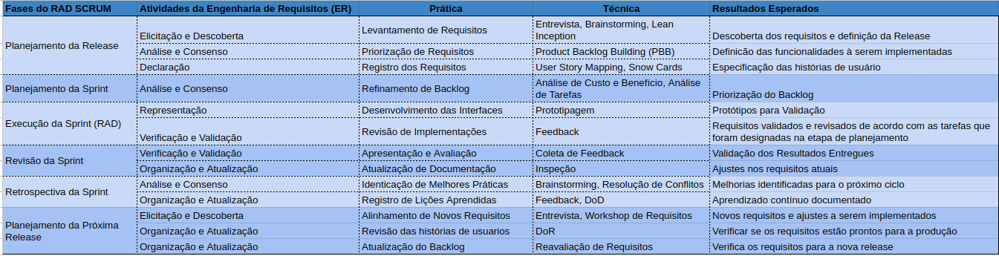

Engenharia de Requisitos
4.1 Atividades e Técnicas da ER e RAD com Scrum
Planejamento da Release 1. Elicitação e descoberta:
Entrevista: Entrevista com a cliente buscando entender a dinâmica do negócio, identificar o problema, propor possíveis soluções, entender o escopo do produto, as limitações e as dificuldades.
brainstorm: Atividade realizada entre os membros da equipe a fim de obter ideias para atender as necessidades do cliente e entender o tipo de solução que iremos propor.
lean inception: Atividade realizada a fim de entender melhor sobre o nosso produto e o nosso cliente, tendo uma ideia inicial do que queremos entregar ao final do projeto.
- análise consenso:
Product Backlog Building (PBB): O PBB será utilizado a fim de entender o que é prioritário no nosso produto, assim entregando um backlog inicial mais coeso.
- declaração:
User Story Mapping: Uma atividade feita para mostrar o fluxo do Cliente para que todos entendam o que o nosso produto faz e assim tenham uma ideia de como as funcionalidades se comportam na prática.
Snow Cards: Criar cards a fim de facilitar a visualização do backlog para toda a equipe, assim todos terão a disposição uma visão clara dos requisitos e suas prioridades.
Planejamento da Sprint 1. Análise e Consenso
Análise de custo e benefício: Analisar o quão difícil será atender as demandas do projeto e verificar se o calendário está sendo seguido.
Análise de tarefas : Analisar se as tarefas designadas aos membros do projeto estão ligadas a algum requisito que deve ser atendido na respectiva sprint.
Execução da Sprint (RAD)
- Representação
Prototipagem: Prototipar através do figma um protótipo de alta fidelidade com o que será entregue ao cliente, seguindo as práticas e as métricas definidas nos requisitos não funcionais e com o cliente.
- Verificação e Validação
Feedback: Obter o feedback do cliente sobre o protótipo feito na sprint para começar a produção do artefato que irá atender o requisito.
Revisão da Sprint
- Verificação e Validação
Coleta de feedback: Obter o feedback do cliente sobre o que foi entregue na sprint, através de uma reunião mostrando o que foi entregue.
- Organização e Atualização
Inspeção: Uma reunião a fim de entender se estamos de acordo com o backlog e se o que foi entregue na sprint está devidamente atualizado no backlog.
Retrospectiva da Sprint
- Análise consenso
Brainstorming: Atividade realizada com a equipe para identificar quais foram os principais desafios enfrentados e apontar novas ideias e soluções, incentivando a participação de todos os membros.
Resolução de conflitos: Identificação dos conflitos que surgiram durante a sprint, com o objetivo de encontrar as suas devidas soluções.
- Organização e Atualização
Feedback: Coleta de feedback da equipe e cliente com o objetivo de melhorar os processos e desempenho da equipe para a próxima sprint.
DoD: A equipe vai revisar se os critérios de DoD para os requisitos estão sendo seguidos corretamente, garantindo que os requisitos entregues na sprint atendam as expectativas de clareza, viabilidade técnica e completude.
Planejamento da Próxima Release 1. Elicitação e Descoberta
Entrevista: Entrevista realizada com o cliente para planejar quais serão os próximos passos, identificar necessidades e definir os objetivos da próxima release.
Workshop de requisitos: Reuniões com o cliente para detalhar e priorizar os requisitos, assegurando que todas as partes envolvidas estejam alinhadas quanto às expectativas e entregas.
- Organização e Atualização
DOR: Estabelecer critérios claros para garantir que os requisitos ou histórias de usuários estejam prontos para serem trabalhados pela equipe de desenvolvimento.
- Organização e Atualização
Reavaliação de requisitos: Processo de revisar, se necessário ajustar os requisitos existentes, levando em consideração o feedback do cliente e a priorização. Essa etapa vai garantir que todos os requisitos estejam atualizados e prontos para a implementação.
4.2 Engenharia de Requisitos e o RADScrum
